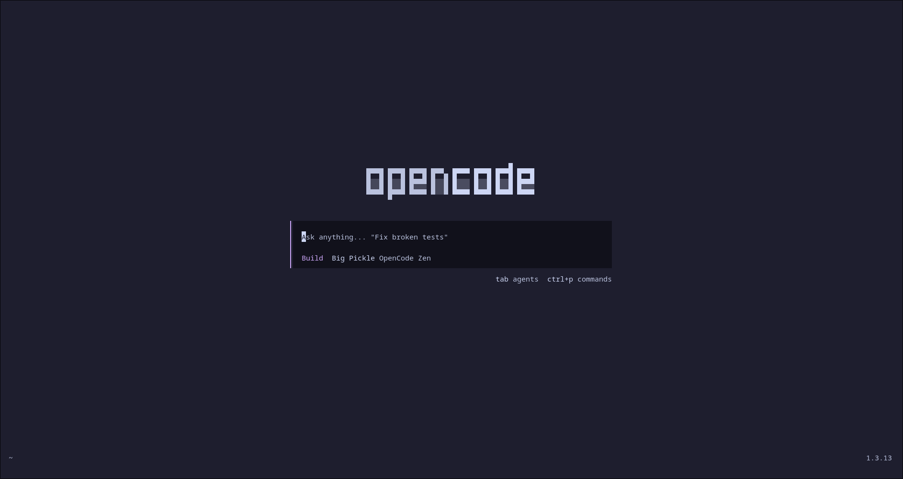

Keep the terminal.
Find our own atmosphere.
Real OpenCode palettes, studied from their source and public previews. Less invented chrome, more attention to color, density, and the small details that could make myagent ours.
Same content, same layout. Let the palettes speak.
The proposed myagent touch is deliberately small: a diamond agent mark, a breadcrumb-like model line, and compact tool timing. No big card system, rounded dashboard controls, or competing branding. Toggle “myagent details” to compare the exact changes.
What I looked at — source links and public examples
- OpenCode's theme documentation — built-in themes, semantic tokens, and raised surfaces. All seven palettes here are taken from the actual OpenCode theme JSON, not approximated from a screenshot.
- Catppuccin for OpenCode — inspected the Mocha preview: plum-tinted background, pastel foregrounds, very quiet input panel, and a colored agent rail. Their theme collection also offers alternate accents.
- TokyoNight's OpenCode extras — a real terminal palette family, not a web-inspired reskin.
- Anthony Shew's public X post — “A Vercel theme for @opencode. Link to gist in reply.” The linked gist is public. This is the neutral-surface counterpoint to the richer palettes. The gallery uses OpenCode's bundled Vercel JSON, not an assumption that the gist is identical.
X's public post text and the linked gist were accessible; I did not have a logged-in feed or access to every attached image/video. No claim of an exhaustive X survey.
Actual public reference image · Catppuccin Mocha for OpenCode. This is upstream's screenshot, not myagent:

Image attribution: catppuccin/opencode · assets/mocha.webp · MIT. Our illustrations use the local OpenCode source snapshot __REVISION__; they do not claim to reproduce every pixel of a current release.
What's real, and what is still a proposal?
Real: source palette values, public references, existing component roles, and terminal-compatible rules and glyphs.
Proposed: every large frame above is an SVG illustration of myagent or an OpenCode-like reference layout—not a screenshot of a running Go or TypeScript renderer. Search text, diff output, timings, and session content are fixed samples.
This page does not modify your Go TUI, save a theme, call a model, or run tools. The previous performance measurements remain in PERFORMANCE.md; this revision is about visual direction only.
Generated locally from resolved theme data. The renderer is render_themes.py; no external runtime or font is required.